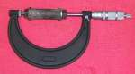
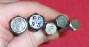
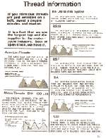
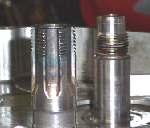
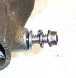

Bolts, nuts, studs, and other threaded fasteners are a vital part of our motorcycles but no one ever thinks about them till they try to take them apart or put them back together. Bolts seem quite simple, but are really very complicated.
I'm just going to cover what you need to know. If you really want to get into it I would recommend reading a book by Carroll Smith called "Nuts, Bolts, Fasteners and Plumbing Handbook". It will tell you more then you will ever want to know about fasteners.

When you tighten a bolt, it acts like a spring. The bolt actually stretches as the bolt is tightened. You can measure this in one of two ways. By how much turning force the bolt takes (Torque) or by the overall length of the bolt (Bolt Stretch). We use a torque wrench to measure the turning force. To measure bolt stretch we use Calipers to measure the over all length of the bolt. Usually, we measure the bolt stretch on connecting rod bolts and compare it to the values given in the shop manual. Not all rod bolts are torqued in this way. You will have to check the shop manual for each engine. You might want to take a bolt and measure it's length. Now put some washers and nuts on it, clamp it's head in a vice and torque the nut to the proper torque figure for that grade of bolt. Now measure it again and see how much it has stretched. Loosen it and measure the bolt. It should have returned to the length you first measured. If it doesn't, that would indicate that the bolt has failed. You might want to torque the bolt till it fails so you can feel what if feels like when the bolt fails (Yields). If you are torqueing a bolt on an engine and feel it Yield, you must replace that bolt.

Bolts are made of different types of steel. The stronger the steel, the higher the torque the bolt can take. The bolt is (Sometimes & sometimes NOT) marked on it's head with a special mark indicating the strength of the bolt, also known as the Grade of the bolt. A grade four bolt is not as strong as a grade eight. However, that would make it too easy, so bolts may not always have markings or there may only be an insignia for the manufacturer. As you might think, the lower grade bolts cost less then the higher grade bolts. If the bolt is only holding a fender on it does not have to be as strong as the bolt that holds the cylinder head on. By using a lower grade and cheaper bolt on a fender a designer can save money. If a fender bolt fails, odds are you will notice it and easily fix it, no harm done. The flip side would be the bolt that holds the cam sprocket to the cam shaft. These bolts need to be very strong. If they fail, the engine could be destroyed. Because of this difference in strength we need to be very careful we don't use a low strength bolt where a high strength one is called for. Well, duh.
When you disassemble an engine, be careful to save ALL the bolts. I once had a man bring in an XR 250 Honda. Someone had pulled the head and cylinder and lost all the bolts. It would have cost over $100.00 to buy all new bolts. That hurts, seeing how these bolts don't really wear out.
 Some Bolts and Studs, such as those that hold the cylinder head on, are under extra stress. These bolts come in different shaft shapes. Usually they are "Waisted". That is, the shaft of the bolt tapers down to a smaller shaft. This helps make the bolt stronger by channeling the stress on the bolt in just the right way. Also, the head of the bolt can be of a special shape. The shape can be to give more strength or to enable the bolt to fit into a tight spot.
Some Bolts and Studs, such as those that hold the cylinder head on, are under extra stress. These bolts come in different shaft shapes. Usually they are "Waisted". That is, the shaft of the bolt tapers down to a smaller shaft. This helps make the bolt stronger by channeling the stress on the bolt in just the right way. Also, the head of the bolt can be of a special shape. The shape can be to give more strength or to enable the bolt to fit into a tight spot.
Most all sizes of bolts come in two thread varieties. Coarse pitch and fine pitch. There is no measurable difference in the strength between them or so they tell me. There is one rule for using one or the other. A coarse pitch is used when the female thread will be weaker then the male thread. If the bolt threads into a casting it should be coarse threaded. On the flip side, if the end of the bolt or stud takes a nut they are supposed to be fine thread. All this talk of coarse and strength might make one wonder why it seems all the crankcase screws, you know, the ones that always strip out so easy, seem to be fine thread. I guess they're not. They are 1.0 pitch. Maybe they don't consider those threads to be fine as there is a 6mm-.75 pitch. They sure look fine to me, especially when compared to 1/4-20. I've also checked the threads on studs I've pulled from a number of different motorcycles. Most seem to have the same thread on both ends. I guess someone forgot to read the rules.
Most all male threads are rolled on, not cut. Rolled threads are stronger then cut threads because the cutting of the threads cuts into the grain of the steel and leaves spots where stress cracks can arise. All female threads are cut in. Sometimes you need to cut a few more threads on a bolt or screw. The big problem with that is if you try to cut too many threads, on side of the bolt will start getting deeper threads and the other side shallower threads. I have never traced a bolt failure to a cut thread, but most of my experience is with stock, unmodified, engines. If you are working on modified engines you might want to try to stay with rolled threads.

There have been all kinds of types of threads and they tell me the best are the British CEI, BSW, BSF, and BA threads. However, no one uses these anymore... go figure.
For a PDF file of Thread Information click

Just to make things interesting, threads can be in right hand OR left hand. I guess the left hand thread can help keep the nut tight if the shaft is turning in the appropriate direction, whatever that is. Actually, I think the engine designers do it to irritate the mechanics. The shop manuals almost always tell you when they throw in a left hand thread. I say most because my example picture is from a DR350 Suzuki. In the after market shop manual I have, I could find no mention of that left hand thread nut in the disassembly instructions. They did mention it at the end of the assembly instructions, kind of as an after thought... just in case you were interested. If that nut absolutely will not come off, try going in the opposite direction... you never know, it might be a left hand nut. Don't get carried away. It might just be a really tight right hand thread. Ain't mechanics fun.
Sometimes engine vibration will make bolts loosen and fall out. We can come up with all kinds of theories as to why this one came loose and that one didn't but to what purpose? For a stock machine, make sure you check the lock washer and replace it if it's not in good condition. Metal and Nylon Collar Lock nuts can usually be reused a number of times. They work a lot better then lock washers, but cost a lot more. Some people say the lock washers do not work, but I don't agree. On many occasions, upon removal, I find the nut all scrapped up by the lock washer. Obviously, the lock washer was fighting to keep that nut on.

Lock washers usually have a plain washer under them, next to whatever part is being tightened. Lock washers come in several styles. Spring, Wave, Internal Tooth, External Tooth, Ribbed, lots of different types. Sometimes, the lock washer will have a tab on the inside which fits into a hole in the part being held on. After you tighten the nut, part of the washer is bent over against the nut. This keeps the nut from loosening. Other times there is a groove in the end of the male threaded part and, after tightening, part of the nut is bent into that groove. This is called a Key Nut. I don't really like these bendy type washers because you need to get a new washer or nut every time you disassemble a part but, if the manufacturer calls for one, you had better use one. Nuts and bolts can also be locked in place by chemical thread lockers and by safety wire. As always, let the shop manual be your guide.
Matt from the "Bolt Depot" E-Mailed me and said you could download a bunch of printable bolt tools from them.

They also have a lot of handy bolt and thread information Here.

 Some Bolts and Studs, such as those that hold the cylinder head on, are under extra stress. These bolts come in different shaft shapes. Usually they are "Waisted". That is, the shaft of the bolt tapers down to a smaller shaft. This helps make the bolt stronger by channeling the stress on the bolt in just the right way. Also, the head of the bolt can be of a special shape. The shape can be to give more strength or to enable the bolt to fit into a tight spot.
Some Bolts and Studs, such as those that hold the cylinder head on, are under extra stress. These bolts come in different shaft shapes. Usually they are "Waisted". That is, the shaft of the bolt tapers down to a smaller shaft. This helps make the bolt stronger by channeling the stress on the bolt in just the right way. Also, the head of the bolt can be of a special shape. The shape can be to give more strength or to enable the bolt to fit into a tight spot.